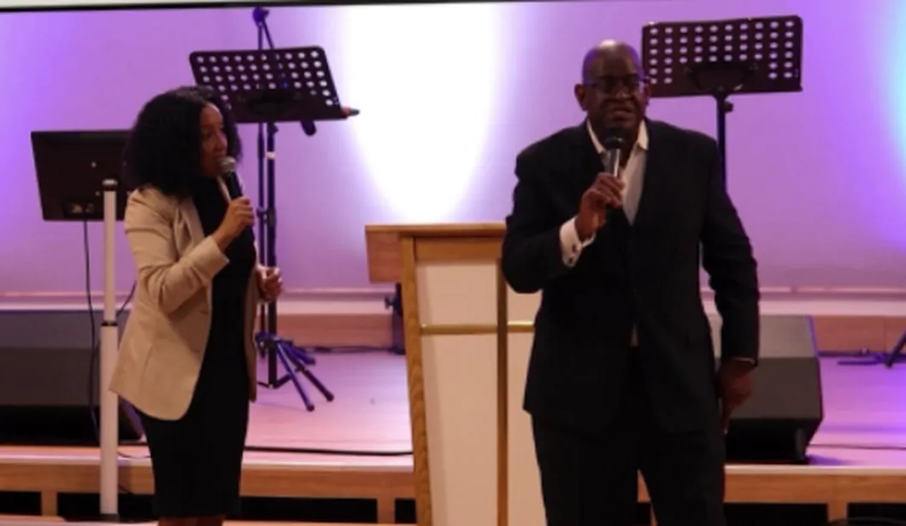
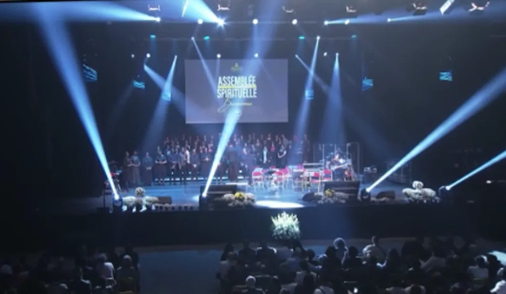
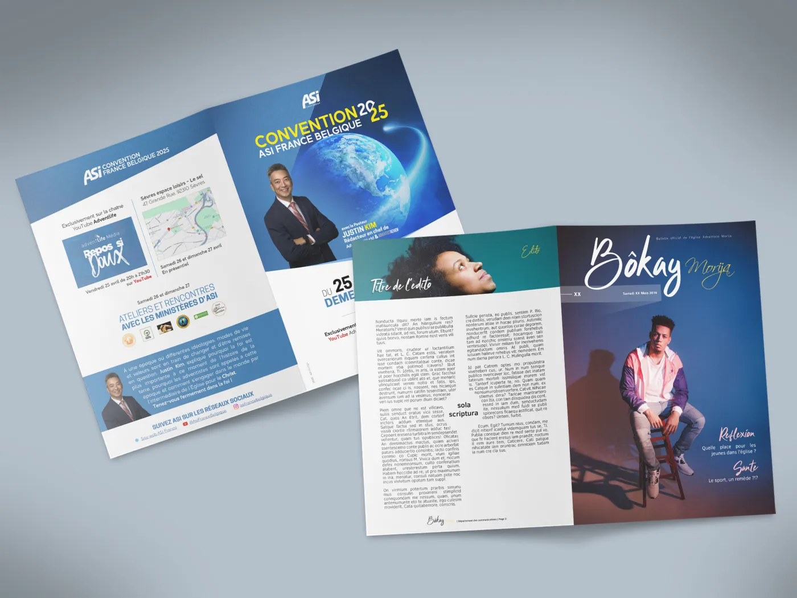
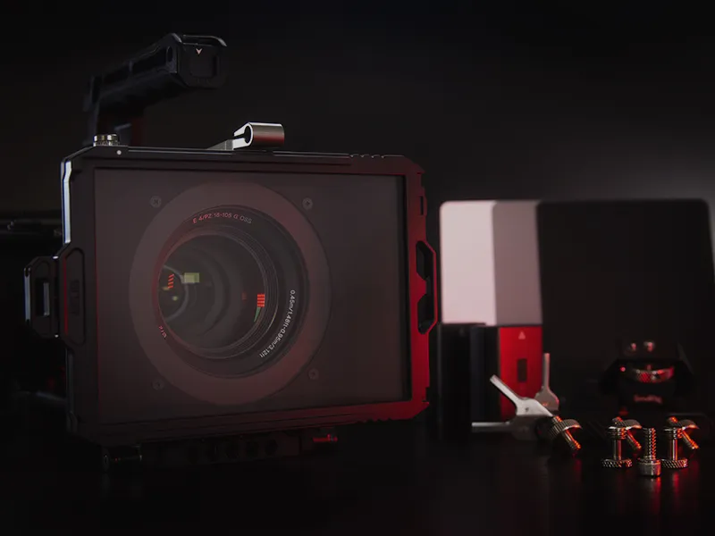
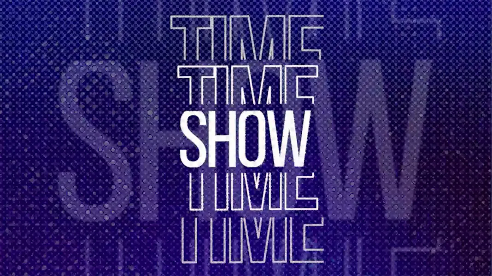

Série de conférences
Captation et diffusion en direct, à plusieurs caméras. À compléter : lieu et date
Voir sur YouTubeCultes en direct, vidéos, son, graphisme et formation : ACP, l’Association Chrétienne de Production, accompagne les églises et les associations dans leurs outils numériques.

En directCultes, conférences et concerts diffusés en direct.VidéosMontages, teasers, génériques.SonEnregistrement et mixage, en studio comme en direct.
GraphismeAffiches, programmes, visuels.PhotosÉvénements et lieux, mis en valeur.
FormationFormer et conseiller les équipes techniques.Nous vous accompagnons dans vos projets, de l’idée à la diffusion, avec du matériel professionnel et des bénévoles formés.
Conférences en direct, concerts de louange, cérémonies de mariage : nous assurons toute la chaîne, de la caméra à la diffusion.
Montages, teasers, boucles vidéo, génériques et post-production.
Compositions, enregistrements, mixage en studio et en direct.
Affiches, visuels pour le web et les réseaux, photos d’événements.
Former les équipes techniques des églises : son, image, diffusion, logiciels.
Solutions « prêtes à brancher », conseils de configuration et logistique pour vos événements.
Nous assurons l’ensemble de la chaîne de production. Quelques réalisations :

Captation et diffusion en direct, à plusieurs caméras. À compléter : lieu et date
Voir sur YouTubeSon, image et diffusion d’un concert de louange. À compléter : quelques mots et le lien de la vidéo
Voir sur YouTube
Courts-métrages, du scénario au montage. À compléter : titres des films et le lien
Voir sur YouTubeRégieLive affiche les chants, les versets et les vidéos sur l’écran de votre église. Gratuit, en français, pensé pour les bénévoles : il est né de notre expérience du terrain.
Découvrir RégieLiveACP est une association. Vos dons financent le matériel, la formation des bénévoles et le développement de RégieLive, qui reste gratuit.
Faire un don avec HelloAssoÀ compléter : indiquer si les dons ouvrent droit à un reçu fiscal
Un événement à filmer, une formation, une question sur RégieLive ? Écrivez-nous, nous répondons rapidement.
acproduction.asso@gmail.com